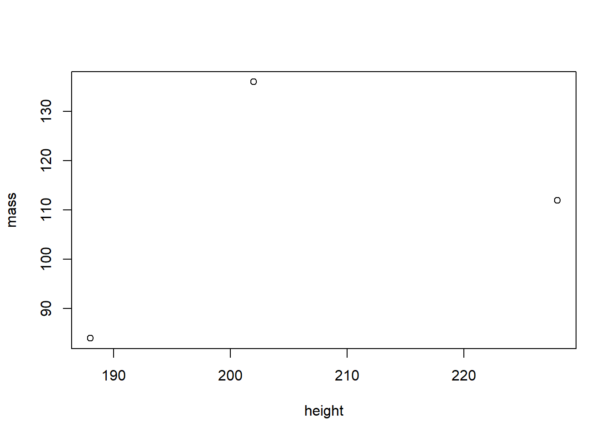
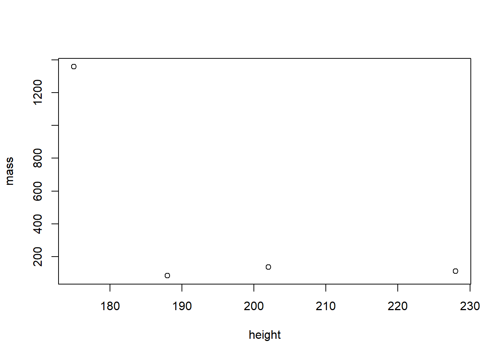

7 Tutorial: Data management with tidyverse
After working through Tutorial 7, you’ll…
- know the advantages of the
tidyversevs.Base R - know about different formats of tabular data
- understand what packages are included in the
tidyversemeta-package - know how to do data modifications and transformations with
dplyr
7.1 Why not stick with Base R?
You might wonder why we’ve spent so much time exploring functions in Base R to now learn data management with tidyverse. After all, data management can also be done in Base R, can’t it? I personally recommend that all R beginners should work with the tidyverse as early as possible. There are three reasons supporting my argument:
- Ease of use: The
tidyverseis very accessible for R “beginners”, i.e. its syntax is very easy to understand. It allows you to set goals (i.e. what you want to do with your data) and get you working on these goals very quickly. Definitely more quickly than inBase R! - Standard for data management: A few years ago, the
tidyversehas become the de facto standard for data management in R. It is a meta-package, which means that it is a collection of distinct packages that all follow the same design principles to make code reading and writing as simple as possible. For example, all functions are named after verbs that indicate exactly what they perform (e.g. filter or summarize). - Beautiful graphs: With the
tidyverse, all data management steps can be swiftly transferred into beautiful graphs. This is because the most popular graph package in R,ggplot2, is part of thetidyverse.
Are you excited now? Then let’s get started!
7.2 Tidyverse packages
The tidyverse comes with a great arsenal of topic-specific packages and their respective functions. It includes packages for:
tibble: creating data structures like tibbles, which is an enhanced type of data framereadr, haven, readxl: reading data (e.g. readr for CSV, haven for SPSS, Stata and SAS, readxl for Excel)tidyr, dplyr: data transformation, modification, and summary statisticsstringr, forcats, lubridate: create special, powerful object types (e.g. stringr for working with text objects, forcats for factors, lubridate for time data)purrr: programming with Rggplot2: graphing/charting
The most frequently used packages of the tidyverse can be installed and activated in one go (less frequently used packages like haven still need to be installed and activated separately):
install.packages("tidyverse") # install the package (only on the first time)
library(tidyverse) # active the package7.3 Tidy data
Dataframes, which we learned about in Types of objects, are tabular data. However, data can also have other formats, for example as nested, i.e. hierarchical, lists. In communication research, these other data formats are mainly used by social media and their respective APIs (perhaps you have heard of the “JSON” format before).
In our course, however, we’ll focus on tabular data.The same data can be represented differently in tables. We perceive some of these representations as tidy, others as messy. While tidy data principles establish a standard for organizing data values inside a data frame and thus all tidy data look the same, every messy dataset is messy in its own way.
Take a look at the table below. It shows a Starwars data set that comes pre-installed with the dplyr package. Do you feel the tabled data is messy? Why (not)?
## # A tibble: 10 x 3
## name body_feature value
## <chr> <chr> <dbl>
## 1 Anakin Skywalker height 188
## 2 Anakin Skywalker mass 84
## 3 Chewbacca height 228
## 4 Chewbacca mass 112
## 5 Darth Vader height 202
## 6 Darth Vader mass 136
## 7 Jabba Desilijic Tiure height 175
## 8 Jabba Desilijic Tiure mass 1358
## 9 Leia Organa height 150
## 10 Leia Organa mass 49Overall, this data is messy. It comes with three messy problems:
- This body_feature column comprises information relating to both height and weight, i.e. both variables are stored in a single column.
- As a result, the value column is reliant on the body_feature column; we can’t tell the stored values apart by merely looking at the value column. We always need to check the body_feature column.
- Consequently, we have issues with vectorized functions (remember, in R, columns in data sets are vectors): We can’t, for example, use the mean() function on the value column to determine the average weight of the Star Wars characters since the height values are also stored there.
What do you think of this table? Is it messy?
## # A tibble: 5 x 3
## name height mass
## <chr> <int> <dbl>
## 1 Anakin Skywalker 188 84
## 2 Chewbacca 228 112
## 3 Darth Vader 202 136
## 4 Jabba Desilijic Tiure 175 1358
## 5 Leia Organa 150 49This table looks tidy! Tidy data is a standard way of mapping the meaning of a dataset to its structure. We determine whether a dataset is messy or tidy depending on how rows, columns and tables are matched up with observations, variables and types. We consider a table tidy when it follows the following golden rules:
- Columns: Every column is one variable.
- Rows: Every row is one observation.
- Cells: Every cell contains one single value.
| Image: The tidy data principle (Source: R for Data Science) |
 |
In messy data sets, on the other hand…
- Column headers are values, not variable names.
- Multiple variables are stored in one column.
- Variables are stored in both rows and columns.
- Multiple types of observational units are stored in the same table.
- A single observational unit is stored in multiple tables.
Why should you be concerned about tidy data organization?
There are two major advantages:
- When you have a consistent data structure, it is easier to learn the respective tools that work well with this data structure.
dplyr,ggplot2, and all the othertidyversepackages are designed for working with tidy data. - Putting variables in columns makes R’s vectorized nature shine. The majority of built-in R-functions (like the mean() function) works with vectors of values. As a result, the tidy reorganization of data seems only natural for a good work flow in R.
If you have been working mainly with survey data, then you will already be familiar with these basic rules, as data export from survey software usually follows these principles. However, “real-world” data from databases or social media often does not follow these principles. That’s why it’s sometimes true to say that 80% of data analysis is spent on cleaning and transforming data.
7.4 The pipe operator
Truly, dplyr is my favorite tidyverse package (even more so than ggplot2, which we’ll cover later!). It allows you to perform powerful data transformations in just a few simple steps.
To this end, dplyr relies on the pipe operator (%>%).4 The %>% operator allows functions to be applied sequentially to the same source object in a concise manner, so that step-by-step transformations can be applied to the data. Therefore, we always call the source object first and then add each transformation step separated by the %>% operator. Let’s illustrate this concept with an example. We’ll use the Starwars data set that you are already familiar with.
starwars_data %>% # First, we define the source object, i.e. the data frame that we want to transform, followed by the pipe operator
plot() # Second, we specify which function should be performed on the source object, here: scatterplot
Now, that’s not very impressive. We could do the same in Base R like this:
plot(starwars_data)
However, dplyr gets really impressive when you chain functions sequentially. You can apply certain selection criteria to your data and plot it in one go. For example, we might exclude the variable name from our scatter plot, since it’s not a metric variable anyway. Also, we might want to look only at those Star Wars characters taller than 170 cm. Let’s try it in a single run!
starwars_data %>% # Define the source object
select(height, mass) %>% # Keep only the height and mass column
filter(height > 170) %>% # Filter all observations that are taller than 170cm
plot() # Plot!
Now try to do the same in Base R:
plot(starwars_data[starwars_data$height>170,]$mass~starwars_data[starwars_data$height>170,]$height, xlab="height", ylab="mass")The Base R code is longer, more nested, and not as readable as the code written in dplyr. And the more selection criteria and functions you need to implement, the worse it gets. For example, imagine you would also want to exclude Star Wars characters with a mass bigger than 1200kg. Peace of cake with dplyr:
starwars_data %>%
select(height, mass) %>%
filter(height > 170) %>%
filter(mass < 1200) %>%
plot() 
7.5 Data transformation with dplyr
dplyrcomes with five main functions:
select(): select variables column by column, i.e. pick columns / variables by their namesfilter(): filter observations row by row, i.e. pick observations by their valuesarrange(): sort / reorder data in ascending or descending ordermutate(): calculate new variables or transform existing onessummarize(): summarize variables (e.g. mean, standard deviation, etc.), best combined withgroup_by()
7.5.1 select()
Scientists will frequently provide you with large data sets including hundreds of variables (often even more!). The first problem in this scenario is narrowing down the variables you are truly interested in. select() helps you to easily choose a suitable subset of variables. In this selection process, the name of the data frame is the source object, followed by the pipe %>% operator. The expression that selects the columns that you are interested in comes after that.
Take the Star Wars data, for example. The original data set has 87 observations (Star Wars characters) and 14 columns / variables (traits of these characters, e.g., birth_year, gender, and species). Yes, 14 columns is not a lot and you could get an overview of this data without subsetting columns. Let’s take a look at the original data frame:
library(dplyr) # load dplyr
starwars_data <- starwars # assign the pre-installed starwars data from dplyr to a source object / variable
starwars_data # print the content of the data frame to the console## # A tibble: 87 x 14
## name height mass hair_color skin_color eye_color birth_year sex gender homeworld species films vehicles starships
## <chr> <int> <dbl> <chr> <chr> <chr> <dbl> <chr> <chr> <chr> <chr> <lis> <list> <list>
## 1 Luke Skywalker 172 77 blond fair blue 19 male mascu~ Tatooine Human <chr> <chr> <chr [2]>
## 2 C-3PO 167 75 <NA> gold yellow 112 none mascu~ Tatooine Droid <chr> <chr> <chr [0]>
## 3 R2-D2 96 32 <NA> white, bl~ red 33 none mascu~ Naboo Droid <chr> <chr> <chr [0]>
## 4 Darth Vader 202 136 none white yellow 41.9 male mascu~ Tatooine Human <chr> <chr> <chr [1]>
## 5 Leia Organa 150 49 brown light brown 19 fema~ femin~ Alderaan Human <chr> <chr> <chr [0]>
## 6 Owen Lars 178 120 brown, gr~ light blue 52 male mascu~ Tatooine Human <chr> <chr> <chr [0]>
## 7 Beru Whitesun la~ 165 75 brown light blue 47 fema~ femin~ Tatooine Human <chr> <chr> <chr [0]>
## 8 R5-D4 97 32 <NA> white, red red NA none mascu~ Tatooine Droid <chr> <chr> <chr [0]>
## 9 Biggs Darklighter 183 84 black light brown 24 male mascu~ Tatooine Human <chr> <chr> <chr [1]>
## 10 Obi-Wan Kenobi 182 77 auburn, w~ fair blue-gray 57 male mascu~ Stewjon Human <chr> <chr> <chr [5]>
## # ... with 77 more rowsFor the sake of practice, let’s say we only want to analyze the species, birth_year, mass, and height of these characters. To simplify data handling, we want to keep only the respective columns.
starwars_data %>% # define the source object
select(name, species, birth_year, mass, height) # keep only the name, species, birth_year, mass and height column## # A tibble: 87 x 5
## name species birth_year mass height
## <chr> <chr> <dbl> <dbl> <int>
## 1 Luke Skywalker Human 19 77 172
## 2 C-3PO Droid 112 75 167
## 3 R2-D2 Droid 33 32 96
## 4 Darth Vader Human 41.9 136 202
## 5 Leia Organa Human 19 49 150
## 6 Owen Lars Human 52 120 178
## 7 Beru Whitesun lars Human 47 75 165
## 8 R5-D4 Droid NA 32 97
## 9 Biggs Darklighter Human 24 84 183
## 10 Obi-Wan Kenobi Human 57 77 182
## # ... with 77 more rowsAt the moment you have only printed the transformed data to the console. However, most of the time we want to keep the transformed data ready for further calculations. In this case we should assign the transformed data into a new source object, which we can access later.
starwars_short <- starwars_data %>% # assign a new source object and define the old source object
select(name, species, birth_year, mass, height) # keep only the name, species, birth_year, mass and height columnLet’s print the new source object, starwars_short, to the console.
starwars_short## # A tibble: 87 x 5
## name species birth_year mass height
## <chr> <chr> <dbl> <dbl> <int>
## 1 Luke Skywalker Human 19 77 172
## 2 C-3PO Droid 112 75 167
## 3 R2-D2 Droid 33 32 96
## 4 Darth Vader Human 41.9 136 202
## 5 Leia Organa Human 19 49 150
## 6 Owen Lars Human 52 120 178
## 7 Beru Whitesun lars Human 47 75 165
## 8 R5-D4 Droid NA 32 97
## 9 Biggs Darklighter Human 24 84 183
## 10 Obi-Wan Kenobi Human 57 77 182
## # ... with 77 more rowsYou can also delete columns by making a reverse selection with the - symbol. This means that you select all columns except the one whose name you specify.
starwars_short %>%
select(-name) # keep all columns except the name column (i.e. delete name column)## # A tibble: 87 x 4
## species birth_year mass height
## <chr> <dbl> <dbl> <int>
## 1 Human 19 77 172
## 2 Droid 112 75 167
## 3 Droid 33 32 96
## 4 Human 41.9 136 202
## 5 Human 19 49 150
## 6 Human 52 120 178
## 7 Human 47 75 165
## 8 Droid NA 32 97
## 9 Human 24 84 183
## 10 Human 57 77 182
## # ... with 77 more rowsYou can delete more than one column in one go:
starwars_short %>%
select(-c(name,species)) # keep all columns except the name & species column (i.e. delete these columns)## # A tibble: 87 x 3
## birth_year mass height
## <dbl> <dbl> <int>
## 1 19 77 172
## 2 112 75 167
## 3 33 32 96
## 4 41.9 136 202
## 5 19 49 150
## 6 52 120 178
## 7 47 75 165
## 8 NA 32 97
## 9 24 84 183
## 10 57 77 182
## # ... with 77 more rowsTip for advanced users: You can select columns and rename them at the same time.
starwars_short %>%
select("character"=name, "age"=birth_year) # select columns that you want to keep & rename them## # A tibble: 87 x 2
## character age
## <chr> <dbl>
## 1 Luke Skywalker 19
## 2 C-3PO 112
## 3 R2-D2 33
## 4 Darth Vader 41.9
## 5 Leia Organa 19
## 6 Owen Lars 52
## 7 Beru Whitesun lars 47
## 8 R5-D4 NA
## 9 Biggs Darklighter 24
## 10 Obi-Wan Kenobi 57
## # ... with 77 more rows7.5.2 filter()
filter() divides observations into groups depending on their values. The name of the data frame is the source object, followed by the pipe %>% operator. Then follow the expressions that filter the data.
Let’s only select human Star Wars characters in our transformed data set starwars_short:
starwars_short %>%
filter(species=="Human")## # A tibble: 35 x 5
## name species birth_year mass height
## <chr> <chr> <dbl> <dbl> <int>
## 1 Luke Skywalker Human 19 77 172
## 2 Darth Vader Human 41.9 136 202
## 3 Leia Organa Human 19 49 150
## 4 Owen Lars Human 52 120 178
## 5 Beru Whitesun lars Human 47 75 165
## 6 Biggs Darklighter Human 24 84 183
## 7 Obi-Wan Kenobi Human 57 77 182
## 8 Anakin Skywalker Human 41.9 84 188
## 9 Wilhuff Tarkin Human 64 NA 180
## 10 Han Solo Human 29 80 180
## # ... with 25 more rowsAnd now let’s only select Star Wars character who are younger than 24 or exactly 24 years old.
starwars_short %>%
filter(birth_year<=24)## # A tibble: 7 x 5
## name species birth_year mass height
## <chr> <chr> <dbl> <dbl> <int>
## 1 Luke Skywalker Human 19 77 172
## 2 Leia Organa Human 19 49 150
## 3 Biggs Darklighter Human 24 84 183
## 4 Wedge Antilles Human 21 77 170
## 5 IG-88 Droid 15 140 200
## 6 Wicket Systri Warrick Ewok 8 20 88
## 7 Plo Koon Kel Dor 22 80 188Chaining some functions, let’s look at Star Wars character who are a Droid and older than 24.
starwars_short %>%
filter(species=="Droid" & birth_year > 24) # & --> filter all observations to which both logical statements apply## # A tibble: 2 x 5
## name species birth_year mass height
## <chr> <chr> <dbl> <dbl> <int>
## 1 C-3PO Droid 112 75 167
## 2 R2-D2 Droid 33 32 96Alternatively, you can also write these filters like this:
starwars_short %>%
filter(species=="Droid") %>%
filter(birth_year > 24)## # A tibble: 2 x 5
## name species birth_year mass height
## <chr> <chr> <dbl> <dbl> <int>
## 1 C-3PO Droid 112 75 167
## 2 R2-D2 Droid 33 32 96Besides the & operator, there are many more logical operators that you can choose from to optimize your filter choices. Here is an overview:
Image: Logical, i.e. boolean, operators (Source: R for Data Science)
[]!(C:/Users/LaraK/Desktop/To-Do/Verwendung von Conditional Process Analysis zur Bewertung von Kommunikationstheorien/LaraKobilke/images/Tut7_logical_operators.JPG)
Tip for advanced users 1: You can negate filters. This means that you keep all observations except the one that you have specified with the != operator (read != as: is not or is unequal to). For example, you can choose to include only non-human Star Wars characters.
starwars_short %>%
filter(species!="Human")## # A tibble: 48 x 5
## name species birth_year mass height
## <chr> <chr> <dbl> <dbl> <int>
## 1 C-3PO Droid 112 75 167
## 2 R2-D2 Droid 33 32 96
## 3 R5-D4 Droid NA 32 97
## 4 Chewbacca Wookiee 200 112 228
## 5 Greedo Rodian 44 74 173
## 6 Jabba Desilijic Tiure Hutt 600 1358 175
## 7 Yoda Yoda's species 896 17 66
## 8 IG-88 Droid 15 140 200
## 9 Bossk Trandoshan 53 113 190
## 10 Ackbar Mon Calamari 41 83 180
## # ... with 38 more rowsAlternatively, you achieve the same goal by negating the entire function call. Negating the entire function call can be handy at times.
starwars_short %>%
filter(!(species=="Human"))## # A tibble: 48 x 5
## name species birth_year mass height
## <chr> <chr> <dbl> <dbl> <int>
## 1 C-3PO Droid 112 75 167
## 2 R2-D2 Droid 33 32 96
## 3 R5-D4 Droid NA 32 97
## 4 Chewbacca Wookiee 200 112 228
## 5 Greedo Rodian 44 74 173
## 6 Jabba Desilijic Tiure Hutt 600 1358 175
## 7 Yoda Yoda's species 896 17 66
## 8 IG-88 Droid 15 140 200
## 9 Bossk Trandoshan 53 113 190
## 10 Ackbar Mon Calamari 41 83 180
## # ... with 38 more rowsTip for advanced users 2: You can filter for missing values (NAs) with the is.na() function.
starwars_short %>%
filter(is.na(birth_year))## # A tibble: 44 x 5
## name species birth_year mass height
## <chr> <chr> <dbl> <dbl> <int>
## 1 R5-D4 Droid NA 32 97
## 2 Jek Tono Porkins Human NA 110 180
## 3 Arvel Crynyd Human NA NA NA
## 4 Nien Nunb Sullustan NA 68 160
## 5 Nute Gunray Neimodian NA 90 191
## 6 Roos Tarpals Gungan NA 82 224
## 7 Rugor Nass Gungan NA NA 206
## 8 Ric Olié <NA> NA NA 183
## 9 Watto Toydarian NA NA 137
## 10 Sebulba Dug NA 40 112
## # ... with 34 more rowsAnd you can negate that filter to get rid of all observation that have missing values (NAs).
starwars_short %>%
filter(!is.na(birth_year))## # A tibble: 43 x 5
## name species birth_year mass height
## <chr> <chr> <dbl> <dbl> <int>
## 1 Luke Skywalker Human 19 77 172
## 2 C-3PO Droid 112 75 167
## 3 R2-D2 Droid 33 32 96
## 4 Darth Vader Human 41.9 136 202
## 5 Leia Organa Human 19 49 150
## 6 Owen Lars Human 52 120 178
## 7 Beru Whitesun lars Human 47 75 165
## 8 Biggs Darklighter Human 24 84 183
## 9 Obi-Wan Kenobi Human 57 77 182
## 10 Anakin Skywalker Human 41.9 84 188
## # ... with 33 more rowsTip for advanced users 3: Watch out for the | operator (read: or). This one can be tricky to negate!
For example, with this code you get all characters that are NEITHER human NOR older than 33 years. I.e. you get all non-human characters who are younger than 33 or exactly 33 years old.
starwars_short %>%
filter(!((species == "Human") | (birth_year > 33)))## # A tibble: 4 x 5
## name species birth_year mass height
## <chr> <chr> <dbl> <dbl> <int>
## 1 R2-D2 Droid 33 32 96
## 2 IG-88 Droid 15 140 200
## 3 Wicket Systri Warrick Ewok 8 20 88
## 4 Plo Koon Kel Dor 22 80 188But with this code, you’ll get all observations that are either non-human (regardless of their age) OR humans who are older than 33 years old.
starwars_short %>%
filter((species != "Human") | (birth_year > 33))## # A tibble: 67 x 5
## name species birth_year mass height
## <chr> <chr> <dbl> <dbl> <int>
## 1 C-3PO Droid 112 75 167
## 2 R2-D2 Droid 33 32 96
## 3 Darth Vader Human 41.9 136 202
## 4 Owen Lars Human 52 120 178
## 5 Beru Whitesun lars Human 47 75 165
## 6 R5-D4 Droid NA 32 97
## 7 Obi-Wan Kenobi Human 57 77 182
## 8 Anakin Skywalker Human 41.9 84 188
## 9 Wilhuff Tarkin Human 64 NA 180
## 10 Chewbacca Wookiee 200 112 228
## # ... with 57 more rows7.5.3 arrange()
arrange() and filter() are like two brothers: both look similar, but they also differ in at least one essential aspect. Both functions change the rows of the data frame, but unlike filter(), arrange() does not select or delete rows, it only changes their order (either ascending or descending). By default, arrange() will sort in ascending order, i.e. from 1:100 (numeric vector) and from A:Z (character vector). arrange() must always be applied to at least one column that is to be sorted.
starwars_short %>%
arrange(birth_year)## # A tibble: 87 x 5
## name species birth_year mass height
## <chr> <chr> <dbl> <dbl> <int>
## 1 Wicket Systri Warrick Ewok 8 20 88
## 2 IG-88 Droid 15 140 200
## 3 Luke Skywalker Human 19 77 172
## 4 Leia Organa Human 19 49 150
## 5 Wedge Antilles Human 21 77 170
## 6 Plo Koon Kel Dor 22 80 188
## 7 Biggs Darklighter Human 24 84 183
## 8 Han Solo Human 29 80 180
## 9 Lando Calrissian Human 31 79 177
## 10 Boba Fett Human 31.5 78.2 183
## # ... with 77 more rowsTo get a descending order:
starwars_short %>%
arrange(desc(birth_year))## # A tibble: 87 x 5
## name species birth_year mass height
## <chr> <chr> <dbl> <dbl> <int>
## 1 Yoda Yoda's species 896 17 66
## 2 Jabba Desilijic Tiure Hutt 600 1358 175
## 3 Chewbacca Wookiee 200 112 228
## 4 C-3PO Droid 112 75 167
## 5 Dooku Human 102 80 193
## 6 Qui-Gon Jinn Human 92 89 193
## 7 Ki-Adi-Mundi Cerean 92 82 198
## 8 Finis Valorum Human 91 NA 170
## 9 Palpatine Human 82 75 170
## 10 Cliegg Lars Human 82 NA 183
## # ... with 77 more rowsIf you specify more than one column, then subsequent columns are used to break ties. Also note that missing values are always displayed last:
starwars_short %>%
arrange(species, birth_year)## # A tibble: 87 x 5
## name species birth_year mass height
## <chr> <chr> <dbl> <dbl> <int>
## 1 Ratts Tyerell Aleena NA 15 79
## 2 Dexter Jettster Besalisk NA 102 198
## 3 Ki-Adi-Mundi Cerean 92 82 198
## 4 Mas Amedda Chagrian NA NA 196
## 5 Zam Wesell Clawdite NA 55 168
## 6 IG-88 Droid 15 140 200
## 7 R2-D2 Droid 33 32 96
## 8 C-3PO Droid 112 75 167
## 9 R5-D4 Droid NA 32 97
## 10 R4-P17 Droid NA NA 96
## # ... with 77 more rows7.5.4 mutate()
Often you want to add new columns to a data set, e.g. when you calculate new variables or when you want to store re-coded values of other variables. With mutate(), new columns will be added to the end of you data frame.
For example, we can resize the height column to provide the body height in m instead of cm. Let’s call that variable m_height. We’ll assign our transformed data (with the newly created m_height column) back into our source object (starwars_short) to keep the changes for the future (and not just print it to the console).
starwars_short <- starwars_short %>% # assigns your source object, i.e. data, back to itself to save changes
mutate(m_height=height/100) # creates the new variable "m_height" and adds it to the end of the data frame
starwars_short # print the data to your console to inspect the new column## # A tibble: 87 x 6
## name species birth_year mass height m_height
## <chr> <chr> <dbl> <dbl> <int> <dbl>
## 1 Luke Skywalker Human 19 77 172 1.72
## 2 C-3PO Droid 112 75 167 1.67
## 3 R2-D2 Droid 33 32 96 0.96
## 4 Darth Vader Human 41.9 136 202 2.02
## 5 Leia Organa Human 19 49 150 1.5
## 6 Owen Lars Human 52 120 178 1.78
## 7 Beru Whitesun lars Human 47 75 165 1.65
## 8 R5-D4 Droid NA 32 97 0.97
## 9 Biggs Darklighter Human 24 84 183 1.83
## 10 Obi-Wan Kenobi Human 57 77 182 1.82
## # ... with 77 more rowsLet’s calculate the BMI of the Star Wars characters with the BMI formula and the newly created m_height variable. Save the changes to your data frame by assigning the source object back to itself.
starwars_short <- starwars_short %>% # assigns your source object, i.e. data, back to itself to save changes
mutate(BMI= mass/m_height^2) # creates the new variable "BMI" and adds it to the end of the data frame
starwars_short # print the data to your console to inspect the new column## # A tibble: 87 x 7
## name species birth_year mass height m_height BMI
## <chr> <chr> <dbl> <dbl> <int> <dbl> <dbl>
## 1 Luke Skywalker Human 19 77 172 1.72 26.0
## 2 C-3PO Droid 112 75 167 1.67 26.9
## 3 R2-D2 Droid 33 32 96 0.96 34.7
## 4 Darth Vader Human 41.9 136 202 2.02 33.3
## 5 Leia Organa Human 19 49 150 1.5 21.8
## 6 Owen Lars Human 52 120 178 1.78 37.9
## 7 Beru Whitesun lars Human 47 75 165 1.65 27.5
## 8 R5-D4 Droid NA 32 97 0.97 34.0
## 9 Biggs Darklighter Human 24 84 183 1.83 25.1
## 10 Obi-Wan Kenobi Human 57 77 182 1.82 23.2
## # ... with 77 more rowsmutate() does not merely work with mathematical operators. You can also categorize numeric variables with the case_when function, which is part of the mutate() function.
starwars_short <- starwars_short %>%
mutate(age_cat= case_when( # "cat" is short for "categorized"
birth_year < 20 ~ "very young",
birth_year < 40 ~ "young",
birth_year < 70 ~ "mid-aged",
birth_year <= 100 ~ "old",
birth_year > 100 ~ "very old")
)
starwars_short## # A tibble: 87 x 8
## name species birth_year mass height m_height BMI age_cat
## <chr> <chr> <dbl> <dbl> <int> <dbl> <dbl> <chr>
## 1 Luke Skywalker Human 19 77 172 1.72 26.0 very young
## 2 C-3PO Droid 112 75 167 1.67 26.9 very old
## 3 R2-D2 Droid 33 32 96 0.96 34.7 young
## 4 Darth Vader Human 41.9 136 202 2.02 33.3 mid-aged
## 5 Leia Organa Human 19 49 150 1.5 21.8 very young
## 6 Owen Lars Human 52 120 178 1.78 37.9 mid-aged
## 7 Beru Whitesun lars Human 47 75 165 1.65 27.5 mid-aged
## 8 R5-D4 Droid NA 32 97 0.97 34.0 <NA>
## 9 Biggs Darklighter Human 24 84 183 1.83 25.1 young
## 10 Obi-Wan Kenobi Human 57 77 182 1.82 23.2 mid-aged
## # ... with 77 more rowsFinally, you can recode variables by using the recode() function, which is part of the mutate() function. Let’s be crazy and recode all droids as robots5 and save the result in a new variable called crazy_species! Please note that recode() has an unusual syntax because it follows the order of old_var = new_var instead of the usual order: new_var = old_var. Therefore, recode() is likely to be retired in the future (use case_when instead).
starwars_short <- starwars_short %>%
mutate(crazy_species=recode( # alternatively, you could also recode directly back into the species variable
species, "Droid"="Robot")
)
starwars_short## # A tibble: 87 x 9
## name species birth_year mass height m_height BMI age_cat crazy_species
## <chr> <chr> <dbl> <dbl> <int> <dbl> <dbl> <chr> <chr>
## 1 Luke Skywalker Human 19 77 172 1.72 26.0 very young Human
## 2 C-3PO Droid 112 75 167 1.67 26.9 very old Robot
## 3 R2-D2 Droid 33 32 96 0.96 34.7 young Robot
## 4 Darth Vader Human 41.9 136 202 2.02 33.3 mid-aged Human
## 5 Leia Organa Human 19 49 150 1.5 21.8 very young Human
## 6 Owen Lars Human 52 120 178 1.78 37.9 mid-aged Human
## 7 Beru Whitesun lars Human 47 75 165 1.65 27.5 mid-aged Human
## 8 R5-D4 Droid NA 32 97 0.97 34.0 <NA> Robot
## 9 Biggs Darklighter Human 24 84 183 1.83 25.1 young Human
## 10 Obi-Wan Kenobi Human 57 77 182 1.82 23.2 mid-aged Human
## # ... with 77 more rowsTip for advanced users 1: There is a special case of recoding: Sometimes you will receive data (e.g. through an import from SPSS) in which missings are not marked as NA, but with -9 (or any other number). Unfortunately, you will have to tell R that these are missing values and should be set to NA. In this case, use the na_if() function, which is also part of the mutate() function.
Luke Skywalker, the first observation in our data frame, is 172cm tall. For the sake of practice, let’s set all heights that are equal to 172cm to NA. This time, we won’t save this transformation for later use (by reassigning the source object back to itself) since this transformation does not make a lot of sense.
starwars_short %>%
mutate(height= na_if(height, 172))## # A tibble: 87 x 9
## name species birth_year mass height m_height BMI age_cat crazy_species
## <chr> <chr> <dbl> <dbl> <int> <dbl> <dbl> <chr> <chr>
## 1 Luke Skywalker Human 19 77 NA 1.72 26.0 very young Human
## 2 C-3PO Droid 112 75 167 1.67 26.9 very old Robot
## 3 R2-D2 Droid 33 32 96 0.96 34.7 young Robot
## 4 Darth Vader Human 41.9 136 202 2.02 33.3 mid-aged Human
## 5 Leia Organa Human 19 49 150 1.5 21.8 very young Human
## 6 Owen Lars Human 52 120 178 1.78 37.9 mid-aged Human
## 7 Beru Whitesun lars Human 47 75 165 1.65 27.5 mid-aged Human
## 8 R5-D4 Droid NA 32 97 0.97 34.0 <NA> Robot
## 9 Biggs Darklighter Human 24 84 183 1.83 25.1 young Human
## 10 Obi-Wan Kenobi Human 57 77 182 1.82 23.2 mid-aged Human
## # ... with 77 more rows7.5.5 simmarize() [+ group_by()]
Instead of using summarize(), you could omit the American English and write summarise(). This function collapses a data frame into a single row that shows you summary statistics about your variables. Be careful not to overwrite your source object with the collapsed data frame, i.e. do not reassign the source object to itself when you use summarize() (at least unless you have a good reason to do so).
starwars_short %>%
summarize(mean_height = mean(height, na.rm=TRUE)) # collapses the data frame into one variable called "mean_height"## # A tibble: 1 x 1
## mean_height
## <dbl>
## 1 174. # na.rm = TRUE -> removes the missing values prior to the computation of the summaryWe now know that the average Star Wars character is 174cm tall. But the summarize()function grows especially powerful when it is combined with `group_by to display summary statistics for groups.
starwars_short %>%
group_by(species) %>% # every unique species becomes its own group
summarize(mean_height = mean(height, na.rm=TRUE), # collapses the data frame into one row with one variable called "mean_height"...
count = n() # and a second variable that shows the group size (i.e. count)
)## # A tibble: 38 x 3
## species mean_height count
## <chr> <dbl> <int>
## 1 Aleena 79 1
## 2 Besalisk 198 1
## 3 Cerean 198 1
## 4 Chagrian 196 1
## 5 Clawdite 168 1
## 6 Droid 131. 6
## 7 Dug 112 1
## 8 Ewok 88 1
## 9 Geonosian 183 1
## 10 Gungan 209. 3
## # ... with 28 more rowsWe learn from the 6 droids in our data set that droids are small, 131cm on average. But Ewoks are even smaller (88cm on average). Pro tip: you can even group by two groups at the same time with the method group_by(x1, x2, .add=TRUE).
Finally, we can also retrieve all relevant summary statistics of a classic box plot:
starwars_short %>%
group_by(species) %>% # every unique species becomes its own group
summarize(MAX = max(height, na.rm = TRUE),
UQ= quantile(height, 0.75, na.rm = TRUE),
M = mean(height, na.rm = TRUE),
# SD = sd(height, na.rm = TRUE), # calculating the standard deviation is useless because we often have only 1 observation per species
LQ= quantile(height, 0.25, na.rm = TRUE),
MIN = min(height, na.rm = TRUE),
count = n() # shows the group_size (i.e. count)
)## # A tibble: 38 x 7
## species MAX UQ M LQ MIN count
## <chr> <int> <dbl> <dbl> <dbl> <int> <int>
## 1 Aleena 79 79 79 79 79 1
## 2 Besalisk 198 198 198 198 198 1
## 3 Cerean 198 198 198 198 198 1
## 4 Chagrian 196 196 196 196 196 1
## 5 Clawdite 168 168 168 168 168 1
## 6 Droid 200 167 131. 96 96 6
## 7 Dug 112 112 112 112 112 1
## 8 Ewok 88 88 88 88 88 1
## 9 Geonosian 183 183 183 183 183 1
## 10 Gungan 224 215 209. 201 196 3
## # ... with 28 more rowsTip for advances users 2: If you want to count the unique values of variables, then data %>% group_by(a, b) %>% summarize(n = n()) might not be the best solution (it’s a lot of code, isn’t it?).
starwars_short %>%
group_by(species, age_cat) %>%
summarize(count = n())## # A tibble: 51 x 3
## # Groups: species [38]
## species age_cat count
## <chr> <chr> <int>
## 1 Aleena <NA> 1
## 2 Besalisk <NA> 1
## 3 Cerean old 1
## 4 Chagrian <NA> 1
## 5 Clawdite <NA> 1
## 6 Droid very old 1
## 7 Droid very young 1
## 8 Droid young 1
## 9 Droid <NA> 3
## 10 Dug <NA> 1
## # ... with 41 more rowsFor more efficient code, you can use the count() function instead: data %>% count(a, b).
starwars_short %>%
count(species, age_cat)## # A tibble: 51 x 3
## species age_cat n
## <chr> <chr> <int>
## 1 Aleena <NA> 1
## 2 Besalisk <NA> 1
## 3 Cerean old 1
## 4 Chagrian <NA> 1
## 5 Clawdite <NA> 1
## 6 Droid very old 1
## 7 Droid very young 1
## 8 Droid young 1
## 9 Droid <NA> 3
## 10 Dug <NA> 1
## # ... with 41 more rows7.5.6 Chaining functions in a pipe
All of the dplyr functions can be chained in one single pipe. Using the original starwars_data, we’ll only analyze Star Wars characters who are older than 25 years (filter()), calculate the BMI (mutate()), group them by their species (group_by()) and summarize the average BMI (summarize()). We’ll display the final result in an ascending order (arrange()).
starwars_data %>%
mutate(BMI = mass/(height/100)^2) %>%
filter(birth_year>25) %>%
group_by(species) %>%
summarize(mean_BMI = mean(BMI, na.rm = TRUE)) %>%
arrange(mean_BMI)## # A tibble: 14 x 2
## species mean_BMI
## <chr> <dbl>
## 1 Gungan 17.2
## 2 Twi'lek 17.4
## 3 Mirialan 18.8
## 4 Cerean 20.9
## 5 Wookiee 21.5
## 6 Rodian 24.7
## 7 Human 25.3
## 8 Mon Calamari 25.6
## 9 Zabrak 26.1
## 10 Droid 30.8
## 11 Trandoshan 31.3
## 12 Yoda's species 39.0
## 13 Hutt 443.
## 14 <NA> NaN7.6 Take-Aways
- Tidy data: is a tabular in which each column represents one single variable, each row represents a single observation and each cell contains only one single value
- Pipe operator: %>% is used to chain functions and apply them to a source object. We call these chains of functions pipes
- dplyr functions: there are five main dplyr functions that you should know of:
select,filter,arrange,mutate, andsummarize[+group_by].
7.7 More tutorials on this
You still have questions? The following tutorials & papers can help you with that:
- Computational Methods in der politischen Kommunikationsforschung by J. Unkel, Tutorial 7, 9 & 10
- R for Data Science, Chapter 12
- R for Data Science, Chapter 5.1.3 and the following
- YaRrr! The Pirate’s Guide to R by N.D.Phillips, Tutorial 10.4
- The tidyverse style guide
- Data wrangling with dplyr & tidyr Cheat Sheet
Now let’s see what you’ve learned so far: Exercise 2: Test your knowledge.